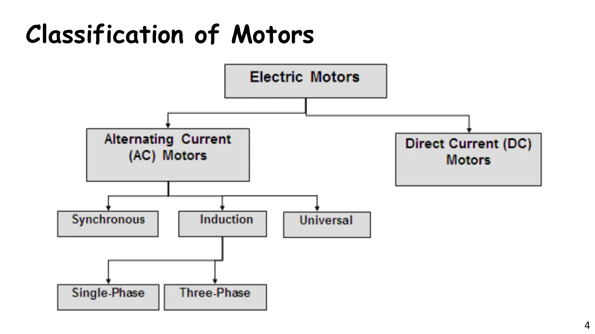
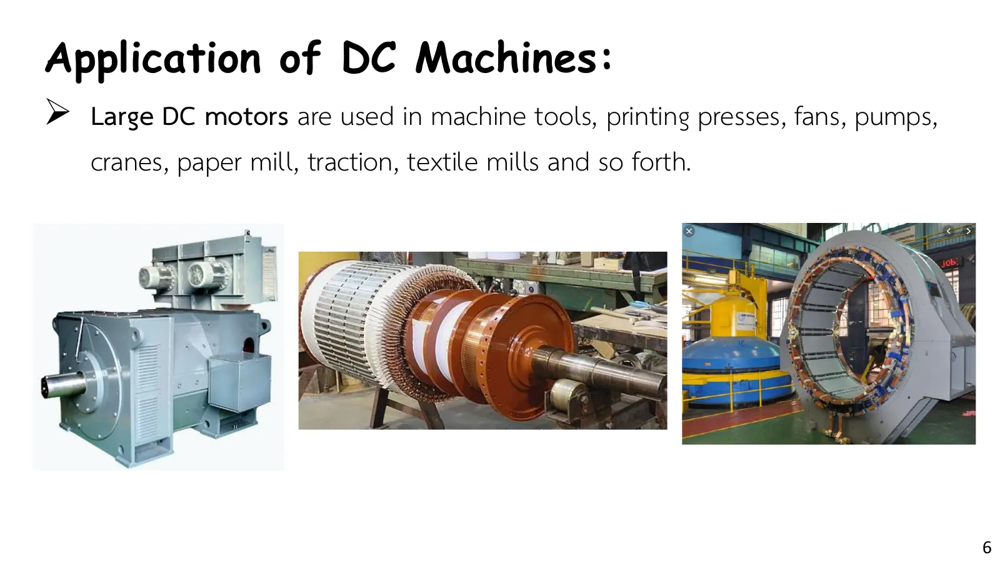
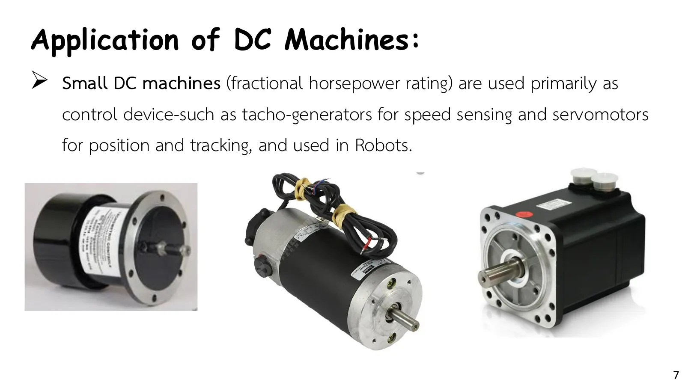
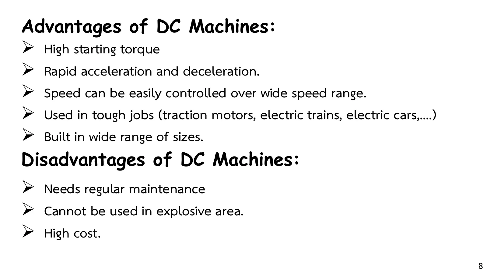
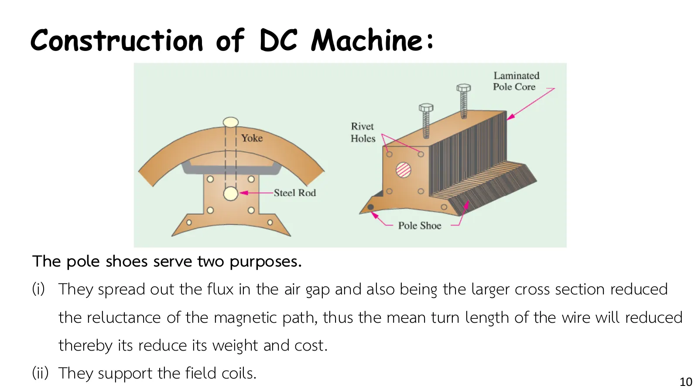
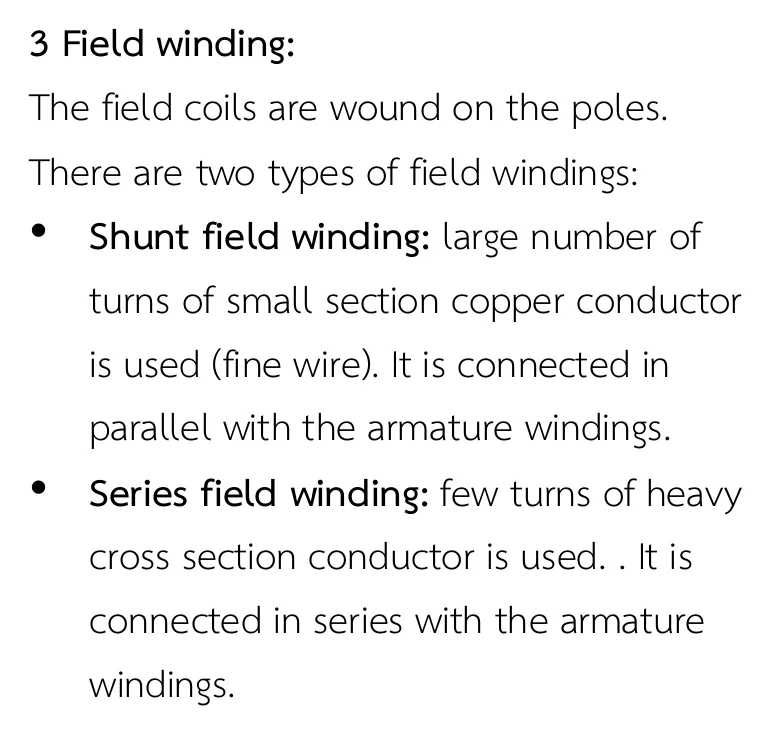
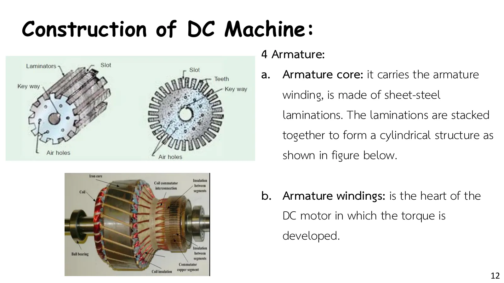

เครื่องจักรกลไฟฟ้ากระแสตรง: การแปลงพลังงานและโครงสร้าง One machine, energy both ways
DC machines: energy conversion and construction One machine, energy both ways
บทที่ 11 ใช้เอกสารประกอบการสอน "Electrical Engineering (Chapter 11) DC Machines" ของผู้สอน และตำรา Principles of Electric Machines and Power Electronics ของ P. C. Sen (พิมพ์ครั้งที่ 3 บทที่ 4) เครื่องจักรกลไฟฟ้า (electric machine) แปลงพลังงานได้สองทาง: มอเตอร์รับพลังงานไฟฟ้าจากแหล่งจ่ายแล้วให้พลังงานกลแก่โหลด เครื่องกำเนิดไฟฟ้า (generator) รับพลังงานกลจากต้นกำลังแล้วให้พลังงานไฟฟ้า (สไลด์หน้า 3) และเครื่องกระแสตรงเครื่องเดียวกันทำได้ทั้งสองอย่าง หน้านี้ครอบคลุมสไลด์หน้า 2–14: บทนำ ชนิดและการใช้งาน (ด้านล่าง) ภาพจำลองที่ให้เครื่องเดียวกันสลับเป็นมอเตอร์หรือเครื่องกำเนิดตามความเร็ว (ส่วน A) และโครงสร้างหกส่วนของเครื่อง (ส่วน B) โจทย์ของหน้านี้คือ Problem 4.25 ของ P. C. Sen (ข้อ 1) ซึ่งถามว่าเครื่องที่ต่อกับสาย 240 V เป็นมอเตอร์หรือเครื่องกำเนิด เอกสารบทนี้ไม่มีเฉลยในห้อง ตัวเลขทุกข้อตรวจกับเฉลยของตำราแล้ว
Chapter 11 uses the instructor's handout "Electrical Engineering (Chapter 11) DC Machines" and P. C. Sen, Principles of Electric Machines and Power Electronics (3rd ed., chapter 4). An electric machine converts energy both ways: a motor takes electrical energy from the supply and gives mechanical energy to the load, a generator takes mechanical energy from a prime mover and gives electrical energy (slide p. 3), and one and the same DC machine can do both. This page covers slides pp. 2–14: the introduction, the kinds of motors and their uses (below), a simulation in which one machine turns from motor into generator as its speed changes (section A), and the six parts of the machine (section B). The problem of this page is P. C. Sen's Problem 4.25 (problem 1), which asks whether a machine on a 240 V line is a motor or a generator. The chapter's handout has no class solutions; every number has been checked against the book's solutions.
ประเด็นสำคัญของหน้านี้
- \(vi = T\omega\): เครื่องอุดมคติแปลงกำลังไฟฟ้า (แรงดัน × กระแส) เป็นกำลังกล (แรงบิด × ความเร็วเชิงมุม) ได้ครบ ถ้าพลังงานไหลจากระบบไฟฟ้าไปยังระบบกลคือมอเตอร์ ไหลกลับทางคือเครื่องกำเนิด (สไลด์หน้า 3)
- ความเร็วเชิงมุม: ป้ายพิกัดบอกความเร็วเป็นรอบต่อนาที (revolutions per minute, rpm) แต่สูตร \(P = T\omega_m\) ต้องใช้เรเดียนต่อวินาที \(\omega_m = 2\pi N_m/60\) (สไลด์หน้า 16)
- วงจรอาร์เมเจอร์: อาร์เมเจอร์ที่หมุนอยู่สร้างแรงเคลื่อนไฟฟ้า \(E_a\) ต่ออนุกรมกับความต้านทาน \(R_a\) เมื่อ \(V_t > E_a\) กระแสไหลจากสายเข้าเครื่อง (มอเตอร์) เมื่อ \(E_a > V_t\) กระแสไหลกลับออกสู่สาย (เครื่องกำเนิด) (ส่วน A, ข้อ 1)
- โครงสร้างหกส่วน: โครง (yoke) ขั้วแม่เหล็กและปลายขั้ว ขดลวดสนาม อาร์เมเจอร์ คอมมิวเตเตอร์ และแปรงถ่าน ส่วนที่อยู่กับที่สร้างฟลักซ์ ส่วนที่หมุนนำกระแสและเกิดแรงบิด (สไลด์หน้า 9–14, ส่วน B)
Key points of this page
- \(vi = T\omega\): an ideal machine turns all of the electrical power (voltage × current) into mechanical power (torque × angular speed). Energy flowing from the electrical system to the mechanical one makes a motor; flowing the other way, a generator (slide p. 3).
- Angular speed: nameplates give the speed in revolutions per minute (rpm), but \(P = T\omega_m\) needs radians per second, \(\omega_m = 2\pi N_m/60\) (slide p. 16).
- The armature circuit: the turning armature generates an emf \(E_a\) in series with its resistance \(R_a\). When \(V_t > E_a\) the current flows from the line into the machine (a motor); when \(E_a > V_t\) it flows back into the line (a generator) (section A, problem 1).
- Six parts: the yoke, the poles with their pole shoes, the field winding, the armature, the commutator and the brushes. The stationary parts make the flux; the rotating part carries the current and develops the torque (slides pp. 9–14, section B).


![Slide 5, Futures of DC Motors: most of the electrical machines in service are AC types; DC machines are of considerable industrial importance; DC machines are mainly used as DC motors and DC generators are rarely used; DC motors provide a fine control of the speed which cannot be attained by AC motors; DC motors can develop rated torque at all speeds from standstill to rated speed; the developed torque at standstill is many times greater than the torque developed by an AC motor of equal power and speed rating](slides/ch11/p05.webp)



เครื่องเดียว พลังงานสองทาง: มอเตอร์หรือเครื่องกำเนิด
One machine, energy both ways: motor or generator
![Slide 3, Electromechanical Energy Conversion: an Ideal Electric Machine block between the electrical system (voltage v, current i) on the left and the mechanical system (torque T, angular speed ω) on the right; the energy flow arrow points right for a motor and left for a generator; boxed: v i = T ω. Motor: the input is electrical energy (from the supply source) and the output is mechanical energy (to the load). Generator: the input is mechanical energy (from the prime mover) and the output is electrical energy](slides/ch11/p03.webp)
สไลด์หน้า 3 วาดเครื่องอุดมคติไว้ระหว่างระบบไฟฟ้า (\(v\), \(i\)) กับระบบกล (\(T\), \(\omega\)) ภาพจำลองนี้ใช้เครื่องของข้อ 1: อาร์เมเจอร์มีความต้านทาน \(R_a = 0.25\ \Omega\) ต่อกับสาย 240 V และฟลักซ์คงที่ แรงเคลื่อนไฟฟ้าที่อาร์เมเจอร์สร้าง \(E_a = K\phi\omega_m\) จึงแปรตามความเร็ว ลองเลื่อนความเร็ว: ต่ำกว่า 1252 rpm \(E_a < V_t\) กระแสไหลจากสายเข้าเครื่อง ลูกศรพลังงานในแผงข้างภาพชี้ลงจากระบบไฟฟ้าไปยังระบบกล (มอเตอร์) สูงกว่า 1252 rpm ต้องมีต้นกำลังขับเพลา \(E_a > V_t\) กระแสกลับทิศ ลูกศรชี้ขึ้น (เครื่องกำเนิด) ไม่ต้องต่อสายใหม่เลย ส่วนความร้อน \(I_a^2R_a\) (ลูกศรสีชมพู) เกิดทุกกรณี
Slide p. 3 draws an ideal machine between the electrical system (\(v\), \(i\)) and the mechanical system (\(T\), \(\omega\)). This simulation uses the machine of problem 1: an armature with \(R_a = 0.25\ \Omega\) on a 240 V line, with constant flux, so the emf the armature generates, \(E_a = K\phi\omega_m\), follows the speed. Move the speed: below 1252 rpm \(E_a < V_t\), the current flows from the line into the machine, and the energy arrow in the side panel points down from the electrical to the mechanical system (a motor). Above 1252 rpm, which needs a prime mover driving the shaft, \(E_a > V_t\), the current reverses and the arrow points up (a generator), without any change of wiring. The heat \(I_a^2R_a\) (pink arrow) appears either way.
โครงสร้างของเครื่องกระแสตรง: หกส่วนและหน้าที่
The DC machine: six parts and what they do
![Slide 9, Construction of DC Machine: a cross-section of a four-pole DC machine labelled frame or yoke, field pole with pole core and pole shoe, field winding, air gap, flux lines, laminated armature core and shaft. 1 Yoke: the outer part of the DC motor; it provides the mechanical support for the poles, acts as a protecting cover for the whole machine and carries the magnetic flux produced by the poles; yokes are made of cast iron or cast steel. 2 Field pole: the field poles are mounted inside the yoke and made of thin laminations stacked together; each consists of a pole core and a pole shoe](slides/ch11/p09.webp)



![Slide 13, Construction of DC Machine: a two-pole machine with field poles N and S, the armature winding with coils A, B, C, the commutator segments and the brushes + and − connected to a load; boxed: No. of segments = No. of armature windings. 5 Commutator: its function is to facilitate the collection of current from the armature; it consists of copper segments tightly fastened together with mica or micanite insulating separators on an insulated base; the whole commutator forms a rigid and solid assembly of insulated copper strips and can rotate at high speeds; each segment has a riser where the ends of the armature coils are connected](slides/ch11/p13.webp)

ภาพตัดขวางของเครื่องสองขั้ว: ด้านซ้ายคือขั้ว N ด้านขวาคือขั้ว S ขดลวดสนามพันรอบแกนขั้ว (⊙ กระแสพุ่งออกจากจอ ⊗ พุ่งเข้าจอ) ฟลักซ์ (จุดสีฟ้า) วิ่งจากขั้ว N ข้ามช่องอากาศผ่านอาร์เมเจอร์ไปขั้ว S แล้วแยกกลับทางโครงด้านบนและด้านล่าง ตัวนำในร่องของอาร์เมเจอร์ใต้ขั้ว N มีกระแสพุ่งเข้าจอ ใต้ขั้ว S พุ่งออก ทางขวาคือปลายเพลาที่มองเห็นซี่คอมมิวเตเตอร์และแปรงถ่าน กดเลือกส่วนที่จะดู: ส่วนนั้นเรืองแสงและคำอธิบายจากสไลด์ขึ้นในแผงข้างภาพ
A cross-section of a two-pole machine: the N pole on the left, the S pole on the right, the field coils wound round the pole cores (⊙ current out of the screen, ⊗ into it). The flux (cyan dots) runs from the N pole across the air gap, through the armature to the S pole, and returns through the yoke above and below. The conductors in the armature slots carry current into the screen under the N pole and out of it under the S pole. On the right is the shaft end, with the commutator segments and the brushes. Pick a part: it lights up and its description from the slides appears in the side panel.
P. C. Sen Problem 4.25: เครื่องบนสาย 240 V เป็นมอเตอร์หรือเครื่องกำเนิด
P. C. Sen Problem 4.25: is the machine on a 240 V line a motor or a generator?
เครื่องกระแสตรงต่อกับสายกระแสตรง 240 V หมุนที่ 1200 rpm และสร้างแรงเคลื่อนไฟฟ้าได้ 230 V กระแสอาร์เมเจอร์ 40 A
(a) เครื่องทำงานเป็นมอเตอร์หรือเครื่องกำเนิด (b) จงหาความต้านทานของวงจรอาร์เมเจอร์ \(R_a\) (c) จงหากำลังสูญเสียในอาร์เมเจอร์และกำลังแม่เหล็กไฟฟ้า (d) จงหาแรงบิดแม่เหล็กไฟฟ้า (e) ถ้าปลดโหลดออก จงหาแรงเคลื่อนไฟฟ้าและความเร็ว (ฟลักซ์คงที่)
A DC machine is connected across a 240 V DC line. It runs at 1200 rpm and generates 230 V. The armature current is 40 A.
(a) Is the machine working as a motor or as a generator? (b) Find the resistance of the armature circuit \(R_a\). (c) Find the power loss in the armature and the electromagnetic power. (d) Find the electromagnetic torque. (e) If the load is thrown off, find the generated voltage and the speed (constant flux).
วงจรมีเพียงแหล่งจ่าย \(V_t\) ความต้านทานอาร์เมเจอร์ และแรงเคลื่อนไฟฟ้า \(E_a\) (วงกลมที่มีแท่งหมุนอยู่ภายใน) แผงข้างภาพคือกราฟกระแสอาร์เมเจอร์ตามความเร็ว: ด้านบนเส้นศูนย์เครื่องเป็นมอเตอร์ ด้านล่างเป็นเครื่องกำเนิด ขั้นที่ 3–4 เปลี่ยนเป็นแท่งกำลัง ขั้นที่ 5 ปลดโหลด ลองตอบก่อน
The circuit has only the supply \(V_t\), the armature resistance and the emf \(E_a\) (the circle with the turning bar inside). The side panel is the armature current against the speed: above the zero line the machine is a motor, below it a generator. Steps 3–4 change it to power bars, and step 5 throws the load off. Try it first.
ฝึกเพิ่ม
More practice
ลองทำดู 1 — มอเตอร์หรือเครื่องกำเนิด
- ส่วน A ตั้งความเร็ว 1200 rpm: \(E_a = 230\) V กระแส 40 A ไหลเข้าเครื่อง ลูกศรพลังงานชี้ลงจากระบบไฟฟ้า 9600 W ไปยังระบบกล 9200 W ส่วนต่าง 400 W เป็นความร้อนใน \(R_a\)
- เพิ่มความเร็วจนถึง 1252 rpm: กระแสเป็นศูนย์ เพิ่มต่อเป็น 1300 rpm: กระแสกลับทิศเป็น −36.7 A ลูกศรชี้ขึ้น เครื่องเดียวกันจ่ายไฟกลับเข้าสายโดยไม่ต้องต่อสายใหม่
- คำถาม: ทำไม \(I_a^2R_a\) จึงเป็นบวกเสมอ ไม่ว่ากระแสจะไหลทางใด
ลองทำดู 2 — โครงสร้าง
- ส่วน B เลือกโครง: ฟลักซ์จากขั้วแยกเป็นสองทางในโครง ด้านบนครึ่งหนึ่ง ด้านล่างครึ่งหนึ่ง โครงจึงต้องเป็นวัสดุแม่เหล็ก (เหล็กหล่อหรือเหล็กกล้าหล่อ)
- เปิดแรงบนตัวนำ: ตัวนำใต้ขั้ว N (⊗) ถูกดันลง ใต้ขั้ว S (⊙) ถูกดันขึ้น อาร์เมเจอร์จึงหมุนทวนเข็มนาฬิกา ตัวนำที่อยู่ระหว่างขั้ว (บนและล่าง) อยู่นอกฟลักซ์จึงแทบไม่มีแรง
- คำถาม: ถ้าไม่มีคอมมิวเตเตอร์ ตัวนำที่หมุนจากใต้ขั้ว N ไปอยู่ใต้ขั้ว S ยังมีกระแสทิศเดิม แรงของมันจะเป็นอย่างไร (ดูหน้า 11.2 ส่วน A)
Try this 1 — motor or generator
- In section A set the speed to 1200 rpm: \(E_a = 230\) V and 40 A flows into the machine. The energy arrow points down from the electrical system, 9600 W, to the mechanical system, 9200 W; the 400 W difference is heat in \(R_a\).
- Raise the speed to 1252 rpm: the current is zero. Go on to 1300 rpm: the current reverses to −36.7 A and the arrow points up. The same machine feeds power back into the line with no change of wiring.
- Question: why is \(I_a^2R_a\) always positive, whichever way the current flows?
Try this 2 — the parts
- In section B pick the yoke: the flux from the poles splits into two paths in the yoke, half above and half below, so the yoke must be magnetic material (cast iron or cast steel).
- Turn on the forces: the conductors under the N pole (⊗) are pushed down, those under the S pole (⊙) up, so the armature turns counterclockwise. The conductors between the poles (top and bottom) are outside the flux and feel almost no force.
- Question: without a commutator, a conductor that turns from under the N pole to under the S pole keeps its current direction. What happens to its force? (See page 11.2, section A.)